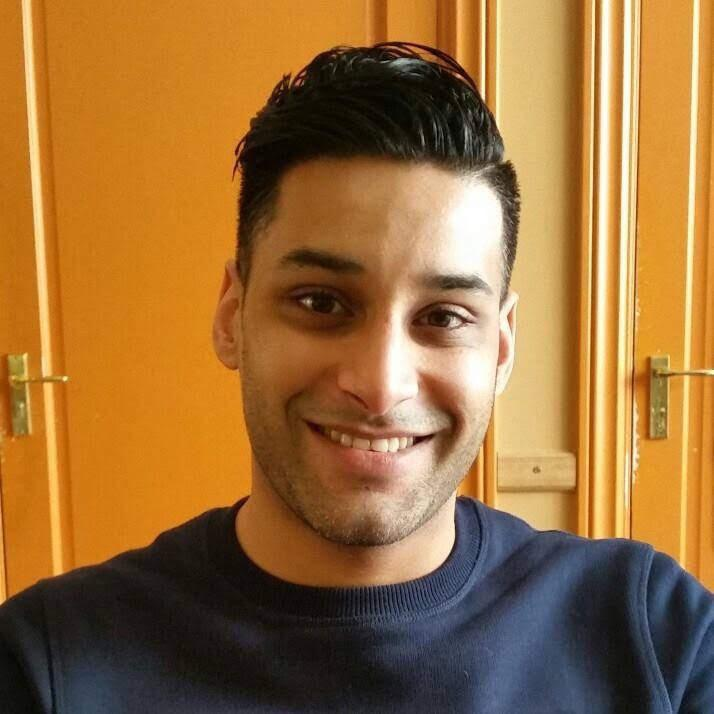

Milton Ramsamoedj: Het heden beschrijft een 35 jarige man die gelukkig getrouwd is sinds 2013.
Inmiddels heb ik nu ook een tweeling van negen maanden oud. Slapeloze nachten en een zware periode achter de rug vanwege de vroeggeboorte van mijn jongens. Maar dat
neemt niet weg dat is heel erg tevreden ben met mijn gezinssamenstelling. Ik ben een trotse vader!
Ik ben geboren in Paramaribo, Suriname. Bijna vier jaar oud was ik toen mijn ouders en ik naar Nederland zijn verhuisd. Mijn hobby's zijn fitness, computergames
en programmeren. Verder vind ik het ook leuk om op vakantie te gaan om lekker te kunnen ontspannen en te genieten van de cultuur en
bezienswaardigheden die de vakantiebestemmingen te bieden hebben.